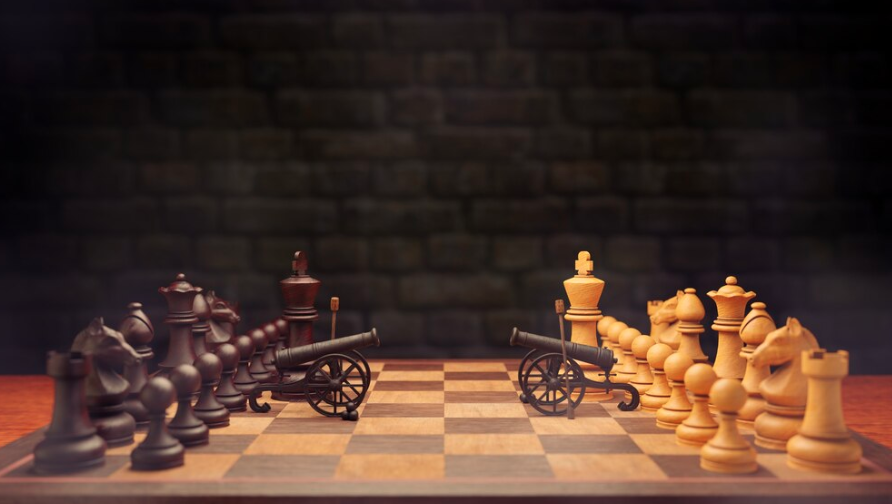

Embora o xadrez tenha essa referência à guerra – tem as torres, um rei,
bispo, cavalo (como se fosse a cavalaria), tem peão (que seria a infantaria) –
não existe essa noção de “combate” no jogo. A guerra é muito mais de você com
você mesmo.

É interessante também analisar as origens do xadrez. Sabe-se que
surgiu na Índia. Numa passagem do livro “O Físico”, de Noah Gordon, em que o
protagonista está na Pérsia do século XI, atual Irã, o Xá o convida a participar de
um jogo de tabuleiro:
“- Nossa antiga diversão. Quando se perde é chamado shahtreng, a
angústia do rei. Mas é mais conhecido como “Jogo do Xá”, pois é sobre guerra.
(...)
– O rei fica no centro, seu fiel companheiro, o general, a postos. De cada
lado deles fica um elefante, lançando sombras agradáveis tão escuras quanto o
índigo sobre o trono. Dois camelos ficam depois dos elefantes, com homens
decididos montados neles. (...) Em cada extremidade das linhas de batalha
encontra-se um rukh, ou guerreiro, que leva as mãos em concha, bebendo o
sangue do inimigo. Na frente move-se a infantaria, cujo dever é ajudar os outros
durante a luta. (...)
– Quem vence no Jogo do Xá, pode governar o mundo.”
Este “Jogo do Xá” é uma das diversas variantes que denotam o
sincretismo do xadrez atual. Nitidamente, o cunho original do xadrez é a
representação da guerra.
 Como tomar decisões visando curto e longo prazo
Como tomar decisões visando curto e longo prazo